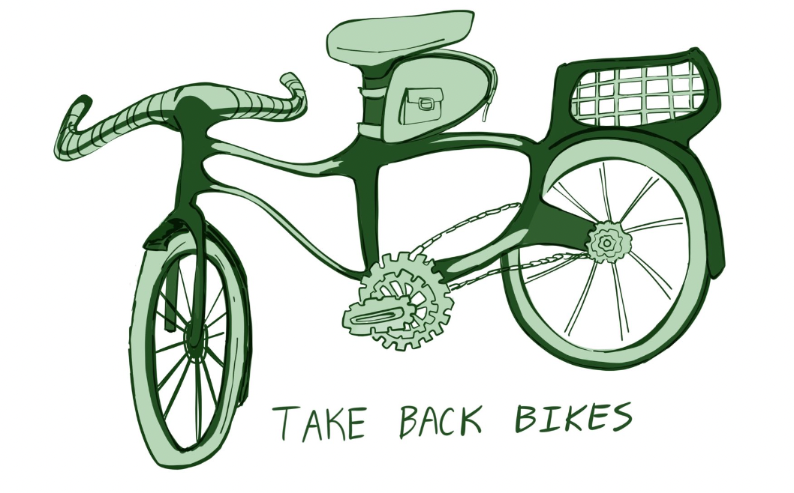

How to use a TBB Bicycle
1. Unlock the bicycle
Look up the combination on the attached fliers, or on this
website!
2. Inspect the bicycle
The ABCs of Bicycle Inspection
- AIR - Pinch the tires. They should be hard.
- BRAKES - Make sure that squeezing the levers stops the bike. Pads are not worn down or rubbing the tire.
- CRANK/CHAIN - The chain should be tight and run smoothly. Pedals should spin easily.
- QUICK CHECK - Quick release levers and other bolts should be closed tightly
- GEAR - Wear a helmet! Should be level and snug.
- By riding a TBB bicycle, you agree to the following: "I am capable of riding a bicycle, am capable of assessing whether or not a bicycle is in a suitable condition to be ridden, and will not ride a TBB bicycle if it is not in an appropriate condition to safely ride. TBB makes no representation about the fitness of any bicycle or the date or status of its most recent repair or inspection."
3. Ride
Please ride safely. Be considerate of pedestrians and other road users. The League of Michigan bicyclists has compiled a list of
Michigan cycling laws for your reference. See also the city of Ann Arbor's tips and regulations for
biking safely.
4. Lock up
Lock up the bike when you're done with it. Make sure it's not obstructing the sidewalk or crosswalks!
go back to the main page?